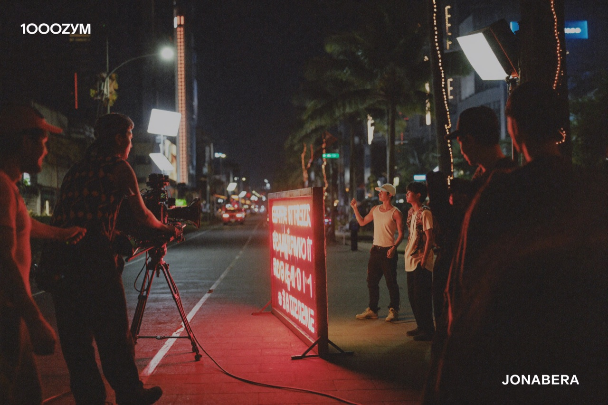
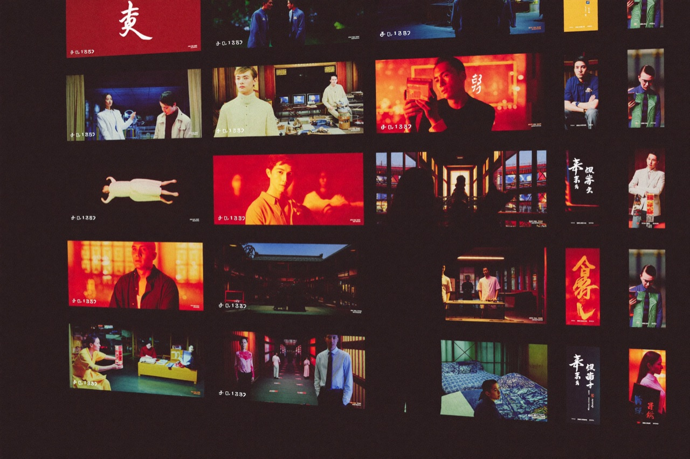

톤티비는 ‘글로벌 원 플랫폼, 로컬 콘텐츠’를 핵심 전략으로 삼는다. 한국·일본·베트남·인도·인도네시아·필리핀 등 주요 시장에 현지 지사를 두고, 각 지역의 문화와 정서에 맞는 콘텐츠를 현지에서 직접 기획·제작한다.
글로벌 플랫폼의 확장성과 현지 콘텐츠의 친밀함을 동시에 갖춤으로써, 전 세계 어디서나 ‘내 나라의 이야기’를 즐길 수 있는 진정한 글로벌 OTT로 자리매김한다는 목표다.
내 나라의 이야기
글로벌 플랫폼이 흔히 빠지는 함정은 ‘어디에도 속하지 않는 콘텐츠’다. 톤티비는 정반대로 간다. 각국 현지 지사가 그 나라의 언어·정서·트렌드를 가장 잘 아는 제작진과 함께 작품을 만든다. 시청자는 글로벌 플랫폼에 접속하지만, 화면에서 만나는 것은 ‘우리 동네 이야기’다.

현지 지사 모델은 콘텐츠와 시장을 빠르게 확장하면서도 본사의 비용 부담을 최소화하는 효율적 구조다. 베트남 등 저비용·고효율 제작 기반은 구조적으로 낮은 손익분기점을 만든다.
수익성의 기반이 되는 구조
톤티비는 명확하고 검증된 수익 구조를 갖추고 있다. 모든 이용자가 무료로 콘텐츠를 즐기는 ‘무료(광고 기반)’ 모델과, 광고 없는 프리미엄 경험을 원하는 이용자를 위한 ‘프리미엄 구독’ 모델의 이원화된 수익 구조를 운영한다.

여기에 각국 현지 지사를 통한 광고주 유치와 콘텐츠 제작이 더해지며, 사용자 규모가 커질수록 광고와 구독 수익이 함께 성장하는 선순환 구조를 구축했다. 텔레그램 기반의 낮은 사용자 획득 비용과 숏폼 콘텐츠 특유의 높은 시청 완주율은 톤티비의 수익성을 더욱 견고하게 뒷받침한다.
현지 지사 모델은 콘텐츠와 시장을 빠르게 확장하면서도 본사의 비용 부담을 최소화하는 효율적 구조로, 톤티비 수익성의 핵심 기반이기도 하다. — 톤코퍼레이션 보도자료블로그 전체 보기